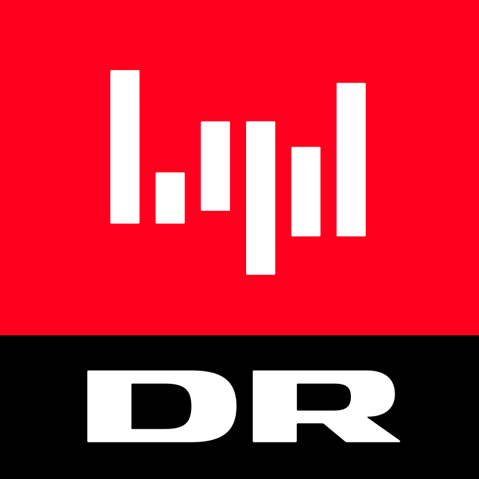

DR Podcasts
119

Radioavisen
706
Genstart
116
Tiden
96
Ubegribeligt
40
Prompt
89
Udsyn
255
Brinkmanns briks
28
Enter - Internettets skygge
100
Bakspejl
6
Genstart Dox
86
Flyvende tallerken
33
De lovløse
2
Rockerne mod fiskerne
6
De hemmelige aktionærer
16
Dronekrigeren